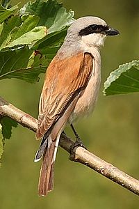
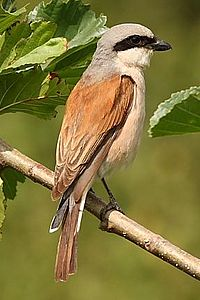

| Red-backed Shrike | |
|---|---|
|  | |
| Conservation status | |
| Binomial name | |
| Lanius collurio Linnaeus, 1758 |
| Red-backed Shrike | |
|---|---|
|  | |
| Conservation status | |
| Binomial name | |
| Lanius collurio Linnaeus, 1758 |
The Red-backed Shrike (Lanius collurio) is a carnivorous passerine bird and member of the shrike family Laniidae.
This bird breeds in most of Europe and western Asia and winters in tropical Africa. Although a migratory visitor to Great Britain, it had been considered extinct as a breeding bird and has been named as a protected bird in Britain under a Biodiversity Action Plan; in September 2010 the RSPB announced that a breeding pair had successfully raised chicks in a secret location in Dartmoor, the first recorded since 1970.[2]
It breeds in open cultivated country with hawthorn and dog rose.
This 16–18 cm (approx. 6.3-7.1 inches) long migratory bird eats large insects, small birds, frogs, rodents and lizards. Like other shrikes it hunts from prominent perches, and impales corpses on thorns or barbed wire as a "larder".
The general colour of the male’s upper parts is reddish. It has a grey head and a typical shrike black stripe through the eye. Underparts are tinged pink, and the tail has a black and white pattern similar to that of a wheatear. In the female and young birds the upperparts are brown and vermiculated. Underparts are buff and also vermiculated.
English common names for the red-backed shrike include 'Wariangle' and 'worrier'.[3]

{kind=link}